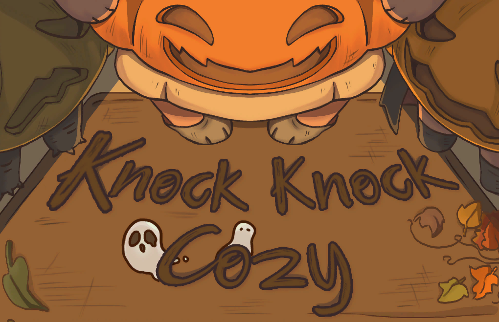

สวัสดีครับ ผมชื่อ ไพศาล อิงควระ เคยทำงานที่ Sunny Syrup Studio และเคยมีโอกาสไปฝึกงานกับ Urnique Studio
ผมชอบการสร้าง Tool ที่ช่วยเพิ่มคุณภาพชีวิต (QOL) ให้กับฝั่ง Developers เช่น
การพัฒนาเครื่องมือเพื่อช่วยลดงานที่ซ้ำซาก หรือลดระยะเวลาที่ใช้ในกระบวนการทำงานให้เร็วขึ้น
Commercial Game
Spirit Mancer
VIDEO
Spirit Mancer เป็นเกมแนว 2D Action Hack-and-Slash ผสมระบบ Deckbuilding พัฒนาโดยใช้ Unity
เกมได้รับรางวัลจาก
Play Prime Award ถึงหกรางวัล
และยังได้เข้าร่วมการแข่งขันในรายการ
LEVEL UP KL
SEA Game Awards 2024
ในเกมนี้ ผมได้รับหน้าที่ในการพัฒนาระบบเกม, Tool และ Optimize
โดยทำงานร่วมกับทีม Porting เพื่อพอร์ตเกมไปยัง Nintendo Switch โดยใช้ Addressables
พร้อมทั้งช่วยสนับสนุนทีมในการแก้ไขบั๊ก
ใช้ Unity Asset ต่าง ๆ เพื่อให้ได้ผลลัพธ์ตามที่ต้องการ เช่น การปรับแต่งระบบ Dialogue
ให้แสดงผลตามที่กำหนด หรือการใช้ Unity Asset Localization สำหรับการแปลภาษา และสร้างคลาส TMP
ที่รวมระบบ
Localization ไว้ด้วย
การใช้ Addressables เพื่อเพิ่มประสิทธิภาพเกมและช่วยทีม Porting ในการทำงานต่าง ๆ เช่น
การปรับระบบให้รองรับการโหลดทรัพยากรจาก Addressables, การใส่ DLC ลงในเกม และการทำ Pooling สำหรับ
Addressables
ปรับปรุงระบบต่าง ๆ เพื่อรองรับฟังก์ชันที่ทีมต้องการ ช่วยทีม Sound ใส่เสียงในเกม และพัฒนา Wrapper
Class สำหรับ WWise ให้โปรแกรมเมอร์คนอื่นสามารถนำไปใช้ได้ง่ายขึ้น
ระบบ Key Binding สำหรับ PC, PS5 และ Nintendo Switch รวมถึงระบบแสดงปุ่มต่าง ๆ ใน UI
Framework ต่าง ๆ ที่ใช้ในโปรเจกต์ เช่น Framework สำหรับ UI และ Framework สำหรับระบบ Puzzle
การจัดการ Sprite เช่น การโหลดเข้าสู่ Unity แล้วย้ายไปยังโฟลเดอร์ของตัวเอง และแยก Sprite
หลักออกจาก Secondary Texture จากนั้นนำ Secondary Texture ใส่ใน Sprite และตั้งค่า Setting ของ
Sprite ให้เรียบร้อย
พัฒนา Tool สำหรับสร้างข้อมูล Addressable เช่น หากเรามีไอเทม 100 ชิ้น สามารถแปลงไอเทมทั้ง 100
ชิ้นให้เป็นข้อมูลใน Addressable ตั้งชื่อให้สามารถอ่านได้ และจัดการใส่กลุ่ม (Group)
ให้กับแต่ละไอเทมได้ทันที
พัฒนา Custom Signals ใน Timeline เพื่อให้ผู้ที่ไม่มีความรู้ด้านการเขียนโค้ดสามารถใช้งานได้ง่าย
เช่น Animation Signals ที่ช่วยให้เปลี่ยน Animation ได้อย่างง่ายดายโดยไม่ต้องลาก Clip มาใส่, Bark
Signals ที่ช่วยให้การใส่ Localization ง่ายขึ้น
และสามารถกำหนดเวลาที่ข้อความจะปรากฏหรือระยะเวลาที่จะโชว์แต่ละ Bark ได้
การทำ Build เกมสามารถกำหนดได้ว่าจะสร้างเกมในรูปแบบใด เช่น การสร้าง Build สำหรับเวอร์ชันปกติ,
เวอร์ชันเปิด Debug Mode หรือเวอร์ชัน Demo
พัฒนา Tool สำหรับการโหลดข้อมูลในคลาสต่าง ๆ เช่น การทำ UI ที่แสดงในฉาก
โดยการใส่คลาสลงไปแล้วระบบจะทำการโหลด Prefab ของ UI นั้น ๆ มาแสดงทันที
More Info
Not Monday Cafe
Not Monday Cafe เป็นเกมแนว Idle และ Farming Simulation คล้ายกับ Rusty's Retirement พัฒนาโดยใช้
Unity
พัฒนาระบบ Grid System ที่เป็นพื้นฐานของระบบทั้งหมดในเกม
และทำหน้าที่เป็นตัวกลางในการเชื่อมต่อระบบต่าง ๆ เข้าด้วยกัน
พัฒนาระบบ Tile Map ที่สามารถใส่พื้นและกำแพงตามที่กำหนดใน Preset ได้อย่างรวดเร็ว รวมถึงมีระบบ
Tile Map Rule ที่พัฒนาเพื่อใช้ในการทำหญ้าให้เชื่อมต่อกันตามที่ทีม Art ต้องการ และระบบวาง Tile
Map ที่มี Visual ชัดเจน
พัฒนาระบบ Building ที่มีโมดูลต่าง ๆ เพื่อให้สามารถจัดการตามความต้องการของทีมได้ เช่น การวาง
Furniture, การวาง Tile Map ที่มีความแตกต่างกันในแต่ละตัว Building
และสามารถเพิ่มหรือลดฟังก์ชันการทำงานต่าง ๆ ได้อย่างง่ายดาย
พัฒนาระบบ Animation โดยใช้ Unity Asset และ Sprite Library เพื่อลดความยุ่งยากในการทำ Animation
ซ้ำ ๆ ในเกม ด้วยการสร้างเป็น State เพื่อให้สามารถนำกลับมาใช้ใหม่ได้ง่าย
พัฒนา Framework สำหรับ Furniture โดยรับผิดชอบในการแสดงผล Sprite และการใส่ข้อมูลสำหรับ AI
ที่ได้เตรียมไว้
ช่วยทีมงานที่ทำ Sound ใส่เสียงในเกม และพัฒนา Wrapper Class สำหรับ WWise
เพื่อให้โปรแกรมเมอร์คนอื่นสามารถนำไปใช้งานได้ง่าย
พัฒนาระบบ Preset ของเกมที่สามารถโหลดข้อมูลของ Furniture, Grid, และ Tile Map จาก Preset
ที่ผู้เล่นได้บันทึกไว้ได้อย่างรวดเร็ว และสามารถเก็บข้อมูลใน Editor เพื่อความสะดวกในการทำ Mockup
หรือ Trailer ของเกม
พัฒนาระบบ Save/Load ในเกม และระบบ UI ส่วนใหญ่ในเกม
พัฒนา Tool สำหรับสร้าง Tile Map ตั้งแต่การตัด Sprite จนถึงการทำเป็น Tile Base และเก็บข้อมูลลงใน
ScriptableObject ภายในไม่กี่คลิก จากที่เคยใช้เวลา 5-10 นาทีในการทำ
พัฒนา Tool สำหรับการสร้างตัวละครในเกมที่ใช้ Sprite Library โดยเริ่มตั้งแต่การตัด Sprite
การตั้งชื่อ การสร้าง Sprite Library และการใส่ Sprite ลงใน Sprite Library พร้อมเก็บข้อมูลลงใน
ScriptableObject
พัฒนาระบบ Auto Load สำหรับข้อมูลต่าง ๆ ในเกมที่สามารถทำได้ในคลิกเดียว เช่น การสร้าง
ScriptableObject เพื่อเก็บข้อมูล และการสร้างปุ่มสำหรับอัปเดตข้อมูลของ ScriptableObject
ที่สร้างขึ้น
พัฒนาการสร้าง Custom Component เช่น การสร้าง Button Class ที่รองรับการใส่ VFX สำหรับการคลิกหรือ
Hover และสามารถเก็บ Text ไว้เพื่อให้เรียกใช้ได้สะดวกมากขึ้น
ทำตัวเลือกในการสร้าง Button โดยสามารถเพิ่ม Localization เข้าไปใน TMP และเพิ่มตัวเลือกในการสร้าง
Button Class ได้
More Info
University Projects
Place of Destination
ภาพที่ 1 : ระบบการต่อสู้ ทิศทางของการโจมตีจะตามเมาส์ของผู้เล่น Enemy
มีทั้งหมดสี่แบบด้วยกันแต่ละแบบจะมีวิธีจัดการที่ไม่เหมือนกัน เมื่อ Enemy
ตายจะดรอปเงินเพื่อเอาไปซื้อของ และมีโอกาสของดรอปของที่เอาไปจีบตัวละครได้อีกด้วย
ภาพที่ 2 : ระบบร้านค้า
ผู้เล่นจะถูกเทเลพอร์ตมาที่นี่หลังจบการต่อสู้เพื่อซื้อของอัพเกรดตัวละคร
และการคุยกับพ่อค้าจะมีตัวเลือกให้ผู้เล่นได้เลือกระหว่างการ Reroll Item และการ Heal
เลือดตัวเองด้วยการจ่ายเงิน
ภาพที่ 3 : ระบบเลือกตัวละครจะมีตัวละครทั้งหมดสองตัวด้วยกันคือ Ronin และ
MarksMan ทั้งสองตัวจะมีการเล่นที่แตกต่างกัน เช่น Ronin เป็นตัวละครตีใกล้ที่เน้นให้ Enemy
ตีก่อนแล้วเข้าไปตี และ MarksMan ที่เป็นตัวละครยิงไกลที่เน้นการเดินไปโจมตีไป
ภาพที่ 4 : ระบบบทสนทนาได้ใช้ Ink
ช่วยในการเช็คว่าเนื้อเรื่องดำเนินถึงจุดไหนแล้วแสดงบทพูดของตัว NPC และ
ยังมีระบบความสัมพันธ์ของ NPC ที่ผู้เล่นจีบได้ด้วยการให้ของที่คล้ายกับ Stardew Valley
และเนื้อเรื่องของ NPC ที่จีบได้มีให้อ่านจนจบได้
Place of Destination เป็นเกมแนว 2D Action Roguelike Dating Sim
คุณจะได้รับบทเป็นนักผจญภัย ที่ต้องได้ออกสำรวจดันเจี้ยนต่าง ๆ คุณจะต้องเอาชนะมอนสเตอร์ในแต่ละรอบ
และเก็บเงินมาอัพเกรดตัวละครจากการชื้อ Item ต่าง ๆ
ให้แข็งแกร่งขึ้นเพื่อให้อยู่รอดถึงรอบสุดท้ายที่จะมีบางอย่างรอคุณอยู่
และยังมีตัวละครที่คุณสามารถจีบได้ด้วยให้ของขวัญที่สามารถหาได้ในการต่อสู้เท่านั้น
จุดเด่นของเกมนี้การที่เราเห็นพัฒนาการของตัวละคร เช่นโจมตีแรงขึ้น วิ่งได้ไวขึ้น เป็นต้น
และก็มีความท้าทายในตัวเอง
ในเกมนี้มีคนทำทั้งหมด 4 คน ผมรับหน้าที่เป็นโปรแกรมเมอร์ และ Project Lead
ภายในงานนี้ผมเป็นคนทำระบบทุกอย่างภายในเกม เช่น ระบบการต่อสู้ ระบบร้านค้า ระบบการอัพเกรดตัวละคร
การใส่ Animation ให้ตัวละครต่าง ๆ และระบบบทสนทนาที่ได้ใช้ตัว Ink เข้ามาช่วยในการทำ
เกมนี้ได้เข้าร่วมการแข่งขันในรายการ GAME
TALENT SHOWCASE 2022 Presented by Bitkub และยังได้เข้ารอบที่มีทั้งหมดสามสิบทีม
More Info
Internship Project
ภาพที่ 1 : ระบบหยิบสิ่งของและระบบ Hover สิ่งของ
เราสามารถหยิบสิ่งของไปมาได้เหมือนกับในเกม Papers, Please และเมื่อเราเอาเมาส์ไป Hover
สิ่งของจะทำให้ Icon ของเมาส์ก็จะเปลี่ยนตามสิ่งของที่เรา Hover และมีตัว UI บอกรายละเอียดต่าง
ๆ
ภาพที่ 2 : ระบบเลือก Tag สิ่งของและระบบแจ้งเตือน เมื่อเรากดเลือก Tag
สิ่งของแล้ว สิ่งของจะโชว์ขึ้นมาให้เราได้ดู
และเมื่อเรามีสิ่งของอันใหม่เพิ่มเข้ามาตัวเกมก็จะขึ้นแจ้งเตือนสีแดง ๆ บนปุ่ม Tag
และจะหายไปเมื่อเรากดเลือก Tag ที่มีแจ้งเตือน
ภาพที่ 3 : ระบบดูรายละเอียดสิ่งของ เมื่อเรากดคลิกขวาที่สิ่งของ
ก็จะเปิดใช้ระบบนี้ขึ้นมา และแสดงข้อมูลที่เกี่ยวกับสิ่งของชิ้นนั้นๆ และสามารถ Zoom
เข้าไปดูสิ่งของได้อีกด้วย ก่อนหน้าที่สามารถหมุนได้แต่ว่าโดนตัดออกไป
ภาพที่ 4 : ระบบปริศนา เราจะต้องเอาสิ่งของไปใส่ไว้ในช่องตรงกลาง เมื่อใส่ผิด
สิ่งของก็จะเด้งกลับไปอยู่ที่เดิม เมื่อเราใส่ถูกต้อง สิ่งของก็จะเด้งกลับไปที่เดิม
และจะเกิดเหตุการณ์ตามที่เราได้กำหมดไว้
ภาพที่ 5 : ระบบบทสนทนา ระบบนี้เป็น Tool จาก Asset Store
เราสามารถพูดคุยกับตัวละครได้ และมีตัวเลือกให้ถามตอบกับตัวละครอีกด้วย และ
เราสามารถใส่เหตุการณ์ต่าง ๆ เมื่อเราถามได้ถูกต้อง
ภาพที่ 6 : ของในภาพนี้คือการเอาตัวระบบบทสนทนา ที่เป็น Tool จาก Asset Store
มาเขียนเพิ่มเช่น ระบบขึ้นรูปประกอบ ระบบแจ้งเตือนว่ามีสิ่งของอันใหม่
และสามารถเปิดดูรายละเอียดได้ทันที และระบบเล่นเพลงตามเหตุการณ์ต่าง ๆ
ภาพที่ 7 : ระบบเลือกเพลง เมื่อเราเอาเมาส์ไปวางไว้ที่ชื่อเพลง
เพลงก็จะเล่นออกมาให้เราได้ลองฟัง และเราสามารถกดเลือกเพลง
หรือเอาออกเพลงได้ตามที่เราต้องการ
โปรเจกต์ที่ได้ทำร่วมกับทาง Urnique Studio แต่ไม่สามารถลงเกี่ยวกับรายละเอียดของโปรเจกต์ได้
โปรเจกต์นี้มีคนทำทั้งหมด 2 คน ผมรับหน้าที่เป็น Game Programmer
ผมได้เป็นคนเขียนระบบทั้งหมดภายในเกม เกมนี้คล้าย ๆ กับเกม Papers, Please
และในโปรเจกต์นี้ยังได้ใช้ Tool จาก Asset Store เข้ามาปรับใช้ในงาน และยังได้เขียนตัวอ่านข้อมูลจาก
Json ที่สามารถเอาข้อมูลเข้าได้อย่างรวดเร็วเช่น การใส่ข้อมูลใน Item
ถ้าใส่ข้อมูลด้วยมือจะใช้เวลาประมาณ 1 - 2 ชั่วโมงแต่ถ้าใช้ตัวอ่านที่ผมเขียนขึ้นมาใช้เวลาแค่ 1 - 2
นาที
Let's Go My Car
ภาพที่ 1 : ระบบขับรถได้ใช้ Mirror ช่วยทำในส่วนของ Multiplayer
เช่นการเช็คว่ารถคันไหนเป็นของผู้เล่น
และผมออกแบบการเคลื่อนที่ของรถทำอยู่บนเครื่องของผู้เล่นเพราะต้องการให้มีความลื่นไหลมากที่สุด
ภาพที่ 2 : ระบบตารางคะแนนหลังจบเกม
เมื่อผู้เล่นเข้าถึงเส้นชัยแล้วจะเปิดหน้าคะแนนขึ้นมาโดยอัตโนมัติแล้วเก็บเวลาของผู้เล่นคนนั้นไว้
และทำแบบนี้จนครบทุกคน และทุกคนต้องเข้าเส้นชัยถึงจะสามารถออกจากเกมได้
ภาพที่ 3 : ระบบล็อบบี้ ในหน้านี้ผู้เล่นสามารถกดเลือกรถสีต่าง ๆ
ได้แต่ว่าการเลือก Map นั้นจะมีแค่ Host เท่านั้นที่เลือกได้และชื่อของผู้เล่นนั้นจะมาจาก Steam
ของผู้เล่นเอง และต้องให้ทุกคนกดพร้อม Host ถึงจะเรื่มเกมได้
ภาพที่ 4 : ระบบเข้าล็อบบี้ เมื่อมีคนกดสร้างห้องไว้ ห้องจะแสดงขึ้นอยู่ที่บนสุด
และตัวอักษรจะมีสีเขียว ในการเป็น Client ผู้เล่นจะสามารถทำทุกอย่างได้เหมือน Host
แต่จะไม่สามารถเลือก Map กับกด Start Game ไม่ได้
Let's Go My Car เป็นเกม Racing Multiplayer ที่ผู้เล่นสามารถเล่นกับเพื่อนได้ถึง 4 คน
ผ่านทางเซิร์ฟเวอร์ของ Steam
เกมนี้ได้ใช้ Tool เข้ามาช่วยคือ Mirror
ใช้ทำระบบที่เกี่ยวกับ Multiplayer ต่าง ๆ ภายในเกม และ Steamworks
ใช้ในการทำระบบล็อบบี้ที่ใช้ตัวเซิร์ฟเวอร์ของ Steam เป็นตัวกลางของการ Host เกม
ในเกมนี้มีคนทำทั้งหมด 2 คน ผมได้รับหน้าที่เป็นโปรแกรมเมอร์ที่เขียนระบบทั้งหมดภายในเกม
เช่นระบบล็อบบี้ ระบบการเคลื่อนที่ของรถ และระบบอย่างการเข้าล็อบบี้เป็นต้น
Link
Game Jam
Knock Knock Cozy

เข้าร่วมใน Cozy Fall Jam
และได้อันดับที่ 8 เกมนี้ผมได้ทำตัว Gameplay หลักและตัว Feel เกมโดยใช้ Dotween
Link
it's Christmas?!
เข้าร่วมใน Cozy Winter Jam
และได้อันดับที่ 4 เกมนี้ผมทำระบบทั้งหมดในเกมและทำงานรวมกับ Game Designer
Link
itch.io
Rabbat
เข้าร่วมใน Global Game Jam Chiang
Mai 2023 และเกมนี้ผมได้ออกแบบตัวระบบ Tower Defense
Link
Fear Me
เข้าร่วมใน Thailand Horror Jam
และได้อันดับที่ 13 เกมนี้ผมได้ออกแบบตัวระบบ Turn-based โดยใช้ Scriptable Object
Link
itch.io
Misc
Train To Hell - VR
Train To Hell เป็นเกมที่พัฒนาให้กับเครื่อง VR ในเกมนี้มีคนทำทั้งหมด 2 คน
ผมได้รับหน้าที่เป็นโปรแกรมเมอร์ที่เขียนระบบทั้งหมดภายในเกม
Link
LifeForceTenka Clone
เกมนี้ถูกพัฒนาด้วย Unreal Engine 4 เรียนรู้เกี่ยวกับการทำเกมและใช้ Asset จาก
UE4
FPS : Lifeforce Tenka Clone
Link
BonkSlayer
BonkSlayer เป็นเกมแนว 2D Top-Down Shooter เป็นเกมแรกที่ได้ทำขึ้นใน Unity
Link
Video
Play on Web
Github